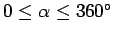
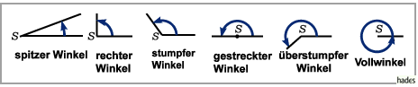

Inhalt Index DeskTop Bronstein
Geometrie Planimetrie Grundbegriffe Winkel
Winkel werden nach dem Richtungsunterschied ihrer Schenkel bezeichnet. Für Winkel im Intervall  sind die in der Abbildung dargestellten und in der Tabelle angegebenen Bezeichnungen gebräuchlich.
